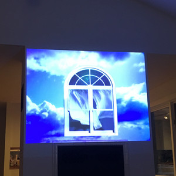
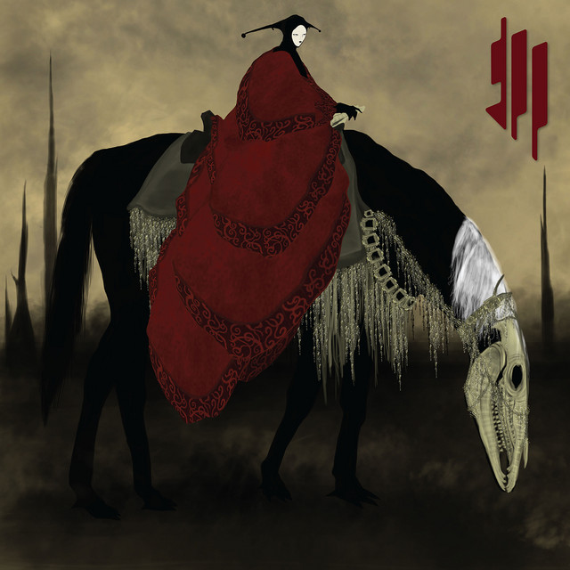

ƪ. ◖ƪ❍⊁◞._◗щ (_ㅇ△₊⁎❝᷀ົཽ_ೃ_(꒡͡ ❝᷀ົཽ ꉺ¨.·__･✧⃛(ཽ๑
҉ ҉.·๑ඕั ҉ ̸ ̡ ҉ ҉.·๑ඕั ҉ ̸ ̡ ҉ ҉.·๑ඕั ҉ ̸ ̡ ҉ ҉.·๑ඕั ҉ ̸ ̡ ҉ ҉.·๑ඕั ҉ ̸ ̡ ҉ ҉.·๑ඕั ҉ ̸ ̡ ҉ ҉.·๑ඕั ҉

Tr.14 (blank)
Butterflies

Música experimental
La música experimental es una etiqueta amplia para sonidos y géneros que superan las convenciones tradicionales. Rompe con la estructura habitual de melodía, armonía y ritmo, utilizando la improvisación, el azar o técnicas de grabación inusuales.
Musica Eletronica convencional
La música electrónica se compone y ejecuta utilizando tecnología como sintetizadores, cajas de ritmos y computadoras. Sus rasgos principales incluyen un ritmo constante y repetitivo (conocido como four-on-the-floor o 4/4), una estructura de crescendos y caídas diseñada para crear tensión (build-ups y drops), y un enfoque central en el diseño de sonido y la producción.